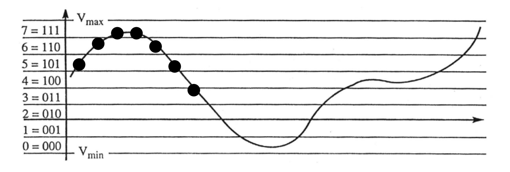
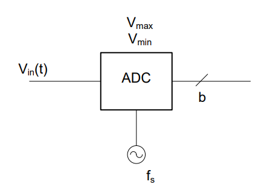
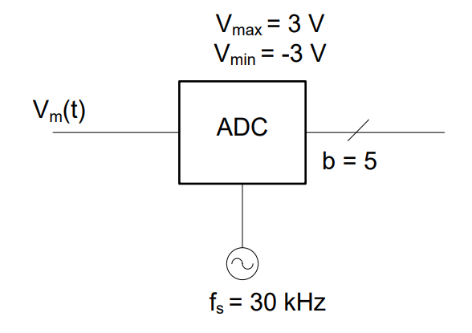

Objective 2.5#
LO# |
Description |
|---|---|
2.5 |
I can calculate the ADC sampling rate, voltage resolution, and digital output based on a given input voltage and the ADC’s operational parameters. |
Analog to Digital Conversion#
As humans, we use analog senses to perceive the world. Our eyes detect subtle variations in the color and intensity of light. Our ears discriminate between a wide and continuous range of frequencies and sound levels. Our senses of taste, touch, and smell also differentiate between a continuous range of inputs. By definition, analog values are continuous, where they can have any value between a defined maximum and minimum value at any given instant in time. For example, our eyes perceive infinite shades of gray – this is analog. Digital means we only allow for a signal to be expressed in terms of values from a certain predetermined set of values. It would be akin to seeing the world in only black and white, or perhaps only specific combinations of red, green, and blue. Either way – we are restricting the possible values of our signal.
One special type of digital value is called binary, which only allows two possible values. Computers (and many things we call digital) use binary values to store and transmit information.
A huge amount of Electrical and Computer Engineering is spent bridging the gap between the physical world’s analog information and digital technology. Consider all the technologies which have been digitized over the last 15 years - cameras, cell phone communications, and TVs are just a few examples. What drove us to convert these technologies to digital?
Digital is less susceptible to noise, which is the static that you hear in older radios and cell phones
Digital can be easily stored and recovered, because the amount of data is significantly reduced
Digital allows for easier encryption and processing by computers.
Digital signals have disadvantages, which is why many technologies start off with analog implementations. For example, the original version of the modern day computer was analog. When you convert your original analog information into a digital format, you lose some fidelity of the information. There’s no way to go from a continuous range of infinite values to discrete levels without throwing something away. Although we can minimize information loss by increasing the number of possible discrete values, this also increases the amount of digital information that you have to save, process, and transmit. For example, an image from a 12 megapixel (MP) camera is a significantly larger file size than a photo from a 1MP camera.
As we discuss the process of converting data from analog to digital, hopefully you’ll begin to understand the tradeoffs. Digitizing a signal consists of three basic steps: sampling, quantizing, and encoding.
Sampling#
Sampling an analog signal means taking a set number of measurements each second. The rate at which we take these measurements, or the sampling rate, is simply how often we take a snapshot of whatever it is we’re trying to sample within a second. Think about watching a show on TV. Even though the movement on the screen looks fairly natural, it really has a sampling rate of 60 frames per second, or 60 Hz. Every 1/60 of a second, the TV’s screen updates. In fact, if you take a slow motion video of your TV with your camera, you will see the flickering of the screen, which is the update rate. This is actually the fact that a slow motion video is taking many more samples per second than the TV, so it “sees” the update rate of the screen.
But what if our TV only updated once per second, would that be enough? What about 1 update per minute? Obviously, there is some minimum standard for how often we need to sample whatever we’re trying to digitize. The limit is based on the Nyquist rate, which is simply two times the highest frequency in the signal:
If we sample at a frequency below the Nyquist rate, we get a distortion in the signal known as aliasing. Aliasing is the cardinal sin of ADC – once it occurs, it can’t be fixed. We can correct a lot of problems but aliased data is unrecoverable!
One simple visual example of aliasing is the wheels of a car during a car commercial. Even though the car is obviously moving forward, the wheels sometimes look as if they are rolling backwards. This is because the wheel is spinning at a rate higher than half the Nyquist frequency. For example, consider the wheel of a car spins at a rate of 35 Hz (or rpm). According to the Nyquist criteria, the required sampling rate would be:
Since the actual TV sampling rate is 60 Hz, the video is aliased and the wheel looks like it is moving backwards. Aliasing can actually change the frequency of the input signal, so that it looks like something completely different. In this case, your digitized signal doesn’t look anything like your analog signal, which defeats the purpose of ADC.
The pictures in figures 1 and 2 show another example of aliasing. Did you realize that edges in images are a form of high frequency content? The image on the left is sampled well above the Nyquist minimum. When we reduce the number of pixels (or samples), we get aliasing in the form of the pattern in the lower right corner.
Figure 1: Properly sampled image. |
Figure 2: Aliased image. |
Example Problem 1#
A typical human voice has a maximum frequency of 3.4 kHz. If we wish to digitize a voice signal, what is the lowest sampling frequency we can use that would prevent aliasing?
Understand: Aliasing is the distortion in a signal when we do not sample it at a high enough rate.
Identify Key Information:
Knowns: We know the maximum frequency of a human voice and we know the Nyquist criteria.
Unknowns: The required sampling rate for ADC.
Assumptions: None.
Plan: We must sample at least at the Nyquist rate to prevent aliasing. Therefore, we calculate the Nyquist rate based on the maximum frequency content of the human voice.
Solve:
Answer: We must use a sampling rate of at least 6.8 kHz to prevent aliasing.
Now we know we have to sample at a rate greater than the Nyquist rate, but what rate should we use? A good example of something you are probably familiar with is music CDs, which are simply digital representations of analog music signals. The human ear has a range between 20Hz and 22kHz:
Therefore, CDs need to have a sampling rate at 44kHz or higher. The actual sampling rate for CDs is 44.1 kHz. But, if 44.1 kHz is good, wouldn’t 50 kHz or even 100 kHz be even better? Here, we see the engineering trade off. The key is to sample at a high enough frequency to adequately reproduce the signal and a low enough frequency to not exceed our memory capacity or digital bandwidth. For a CD, each sample is stored as a 16-bit binary number (2 Bytes). A sampling rate of 44.1 kHz allows up to 80 minutes of uncompressed music to be loaded onto a single disc. While the quality of the music increases slightly with higher sampling rates, it also requires larger discs or reduced play time.
Digitizing#
Now, let’s take a look at how we digitize a signal. Suppose the following sinusoidal signal needs to be converted into a digital signal:
What would the sampled signal look like if we used a 30 kHz sampling frequency? Before we start sampling, we must always check the Nyquist rate to make sure we won’t distort the signal. If our sampling frequency is higher than the Nyquist rate, we can start collecting samples. The Nyquist rate is:
Since the 30 kHz sampling frequency is greater than our signal frequency of 6 kHz, we can start taking samples. First, we find the sampling period, which is simply the inverse of the sampling frequency:
Therefore, we will take a sample every 33.33 μsec. The first three samples are given by:
Look at Figure 3. As you can hopefully see, with a sampling frequency of 30 kHz, we’ve captured a fairly good representation of the original sinusoidal curve.
Figure 3: Sampling VM.
Resolution#
By virtue of being continuous, analog signals contain an infinite range of magnitude values. Once we have sampled the data, we have reduced the number of values (in time) we need to store. However, we must also convert these values to a finite number of digital outputs, in voltage. After an analog signal is sampled, we must then determine which output to associate with the sampled value. In order to calculate the discrete level of any given sample, we set voltage limits (Vmax and Vmin) and a number of bits, b, for the process:
The maximum voltage, Vmax, is the highest input voltage that will be correctly converted. Input voltages higher than Vmax will be treated as though they were Vmax.
The minimum voltage, Vmin, is the lowest input voltage that will be correctly converted. Voltages lower than Vmin will be treated as though they were at Vmin.
The number of bits, b, that will be used to represent the final digital value, determines the total number of possible values for the process:
Let’s look at two different settings for converting \(v(t) = 2\cos(360{^\circ}*1.6\ Hz*t)V\). In Figure 5, we allowed each sample to be assigned to one of 16 possible levels, while in Figure 4, we only allowed 4 levels (easier to see the individual levels). Obviously, the levels assigned to each sample in Figure 5 are a truer representation of the original signal. An important point here is the sampling rate and the resolution are completely independent. Sampling is dividing the signal along the x-axis, while resolution involves dividing the signal along the y-axis.
Figure 4: Sampling with 4 levels (b=2 bits) |
Figure 5: Sampling with 16 levels (b=4 bits) |
Resolution is the smallest voltage change that can be measured by the analog to digital conversion process and is equal to:
In the examples above, our resolutions were 1.25 V/level (Figure 4) and 312.5 mV/level (Figure 5). Some important points worth emphasizing regarding resolution:
Resolution is determined by the analog to digital converter (ADC), not necessarily the analog signal being converted. While we want \(V_{\max}\) and \(V_{\min}\) to encompass the range of our input signals, the two ranges are not the same.
A smaller resolution is a better resolution because you can resolve finer details from your analog signal.
The units for resolution are volts per level (V/level).
The range from Vmax to Vmin is called the dynamic range of the ADC. If an input signal exceeds the dynamic range of a particular ADC, it is said to be clipping.
Example Problem 2#
A 6-bit ADC has a Vmax of 5 V and a Vmin of -1 V. What is the resolution of this ADC?
Understand: The maximum and minimum voltages do not have to be symmetric around 0 V.
Identify Key Information:
Knowns: We know the dynamic range of the ADC and the number of output bits (6).
Unknowns: We want to find the resolution of the ADC.
Assumptions: None.
Plan: We will use the resolution equation to calculate the resolution:
Solve:
Answer: The resolution for the given ADC is 93.75 mV per level.
Example Problem 3#
An ADC is to be used with Vmax = 4 V and Vmin = -2 V. If the worst acceptable resolution is 200 mV per level, what is the minimum number of bits that can be used?
Understand: The more bits we have, the better (smaller) the resolution is.
Identify Key Information:
Knowns: We know the dynamic range of the ADC and the worst acceptable resolution.
Unknowns: We want to find the number of output bits required to satisfy our resolution requirements.
Assumptions: None.
Plan: Solving the resolution equation for 2^b^, we find:
From this equation, we see that the resolution and number of bits are inversely proportional, so if we plug in the worst case (highest) resolution, we will find the minimum number of levels.
Solve:
There are two different ways to solve for b. The easiest way is to simply list the powers of 2 until we get one higher than thirty: 2, 4, 8, 16, 32. Since 32 is the fifth power of 2 (2^5^ = 32), 5 bits will give us an acceptable resolution.
The second way is to use logarithms, where:
Since we want a better resolution than 200 mV per level, we need more than 4.907 bits. There is no such thing as a partial bit; therefore, the minimum number of allowable bits is 5.
Answer: To get a resolution of at least 200 mV per level, 5 bits are required.
Encoding#
The final step in ADC is to encode the sampled value into a binary number. But, first, we must determine what voltage value (or “level”) to assign the sampled value to. Consider the following diagram, where an ADC with 3 output bits is digitizing the signal:

Figure 6: Example of encoding a signal with a 3-bit ADC
The black dots on this diagram represent 7 samples taken from an analog signal. Each level is assigned a number, which is then translated to 3-bit binary. Notice each dot falls into one of the eight levels. The first dot clearly falls into level 5, and therefore is encoded as 101. The second dot is in level 6, or 110. The next two dots are in level 7 (the highest level) and are therefore encoded as 111. The final three dots are in levels 6, 5, and 3 and are encoded as 110, 101, and 011 respectively.
If we combine all these samples in series, the binary values resulting from these 7 samples would be:
While graphing might work with short snippets of signals like this, they are not practical for real-world systems. Recall, CD-quality music uses 16 bits per sample. The number of levels would therefore be:
Fortunately, there is a simple equation to determine which level a given signal should be assigned:
Once a sample, \(V_{in}(t)\), is taken at a specific time, you can solve for the expected level and then truncate (or round down) the result to get an integer value which can be converted into a binary number for saving on a computer. Therefore, the actual quantized level of this sample is:
Remember though, when you round down from the expected level, you are introducing error into your result, because you are moving the actual voltage value of the sample to a different voltage – the nearest allowed value. The goal is to try to include enough levels that this quantization error is relatively small and most of the data in the original signal is preserved.
When choosing a resolution, we encounter an engineering tradeoff. In this case, we want to minimize the amount of information that is lost when we quantize our samples by assigning them an integer level. If you look at the figure above, it should be obvious that the maximum amount of signal that you can lose is a single level’s worth of resolution, so our maximum quantization error is equal to:
\({QE}_{\max} = \ \) \(\Delta V\)
We can lower our resolution by either 1) reducing the range of acceptable voltages – by bringing \(V_{\max}\) and \(V_{\min}\) closer together, or 2) increasing the number of available levels, which means increasing the number of bits used to represent our values.
Since oftentimes we can’t reduce the range of acceptable voltages because it would clip our input signal, the best way to minimize lost information is to increase the number of bits used for each sample. The downside of this approach, though, is the same as mentioned above: each bit added to our samples increases the amount of memory and digital bandwidth needed to save and/or transmit our information.
Putting it All Together#
Now that we’ve talked about the trade-offs involved in deciding how to convert an analog signal into a digital format, consider how you would actually convert your signal given a specific ADC. You will need to know the sampling rate (\(f_{s})\), the range of acceptable voltages (\(V_{\max}\) and \(V_{\min}\)), and the number of bits to be used (b) before you can convert the signal (see diagram below).

Recall, the three steps of the analog to digital conversion process are:
Sampling: Take snapshots in time of the signal at the sample rate, fs.
Quantizing: Determine the quantized levels of your samples – that is, which of the possible digital values does your measured value get assigned to.
Encoding: Convert the quantized level into a binary number that is b bits long.
The following example problem integrates all of the concepts of an ADC.
Example Problem 4#
A sinusoidal signal \(V_{M}(t) = 2\cos(360{^\circ}\ 3kt)V\) needs to be converted into a digital signal using the following ADC:

Determine the first 3 samples output by the ADC.
Understand: By determining the sampling frequency (fs), we have already sampled the signal, so now we need to quantize and encode the samples.
Identify Key Information:
Knowns: We know the equation of the input signal, the ADC’s sampling frequency, the number of bits used to store each sample, and the dynamic range of the ADC.
Unknowns: The quantized level and binary representation of each sample.
Assumptions: None.
Plan: Since we already know the sampling frequency, we can determine the sampling period. Then, we can determine the voltage values (VM) at each sampling time. Finally, we can calculate the expected level and the quantized level, which can easily be converted to binary.
Solve: Recall, the sampling period is given by:
Therefore, the first three samples are given by n*33.33\(\ \mu s\), where n = 0,1,2:
However, before we can do the next conversion step, we need to find the ADC’s resolution:
Now, the signal will be quantized. If we solve for our expected levels, we find:
The FLOOR function is applied to the expected levels to find the quantized level:
Finally, these values are encoded into their 5-bit binary representations:
The conversion from a “standard” decimal number into its binary representation follows from knowing that these binary digits, from right to left, represent \(2^{0},\ 2^{1},2^{2},2^{3},and\ 2^{4}\) respectively. If the binary digit is a 1, multiply 1 by \(2^{X}\) for the digit. If the binary digit is a 0, multiply 0 by \(2^{X}\) for the digit. After this, add all the numbers to get the decimal number. For 26, this would be \({1*2}^{4} + 1*2^{3} + 0*2^{2} + 1*2^{1} + 0*2^{0} = 16 + 8 + 0 + 2 + 0 = 26\). You should become proficient at using your calculator to convert between decimal and binary numbers.
Answer: At t = 0, the ADC would output the binary number, 11010. At t = 33.33 μsec, the ADC would output the binary number, 11000. At t = 66.66 μsec, the ADC would output the binary number, 10011.